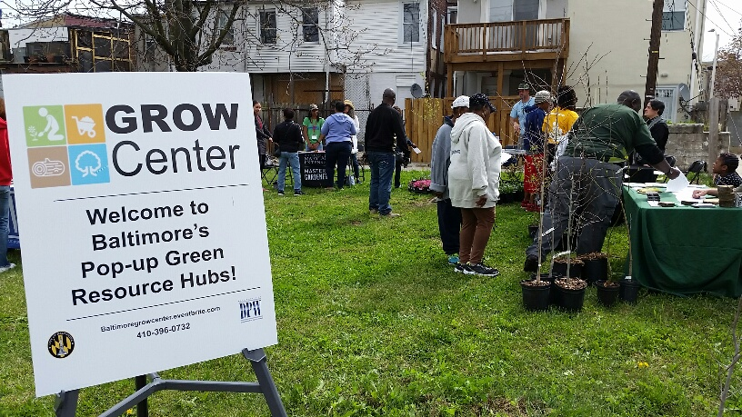

Master's Paper 1
Project Description
A research paper analyzing the attendees of a urban greening resource initative known as Green Resources and Outreach for Watersheds (GROW) Center of Baltimore City Department of Public Works. Data was collected at GROW Center events during Spring of 2018 while working as the GROW Center Coordinator. Data analyzed and maps produced using ArcGIS and QGIS. Results indicate mobile targeted GROW Center programming was successful at reaching areas suitable for programmatic goals.
***More information on the GROW Center Project can be found here